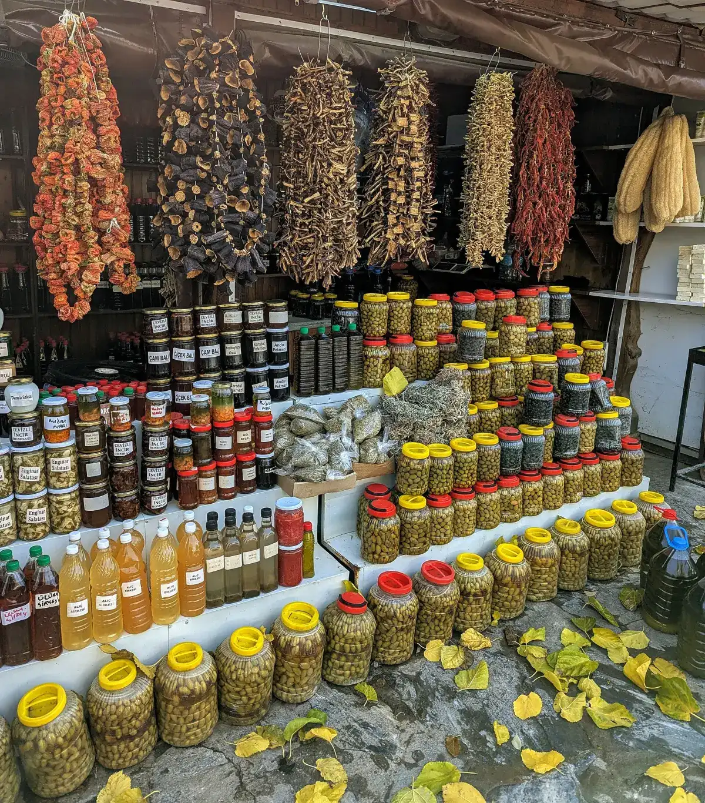

Şirince fruit wines
Cherry, apple, peach and other fruit wines, often made by families at home. Sold to adults only; ask how they are made.
Origin: Şirince, Selçuk
Student project · For teaching purposes only
OLIVE, VINE AND VILLAGE
Selçuk’s rural economy grows olives, figs and grapes, and Şirince turns them into wine, oil and soap. Buying directly from local makers is the simplest way for a visit to support the district.

A VILLAGE ECONOMY
After the 1923 population exchange, the families who settled in Şirince returned to vines, olives and wine. Today their products and guesthouses are the backbone of a village that UN Tourism named one of its Best Tourism Villages in 2023.
This is a cultural guide, not a product listing or endorsement of a particular seller. No prices or availability are claimed.
LOCAL PRODUCTS & SERVICES
Six things to look for, and to ask about, when you visit.
Cherry, apple, peach and other fruit wines, often made by families at home. Sold to adults only; ask how they are made.
Origin: Şirince, Selçuk
Olive growing returned to the village after the population exchange. Ask about the grove, the harvest and the pressing.
Origin: Şirince, Selçuk
A common souvenir made from local oil. Buy from the maker where you can, so the income stays in the village.
Origin: Şirince, Selçuk
Home-made preserves and pickled vegetables follow the season and differ from kitchen to kitchen.
Origin: Şirince, Selçuk
Hand-finished cotton cloths sold in village shops and stalls.
Origin: Şirince, Selçuk
Accommodation in Şirince has grown since the early 2000s. Staying overnight spreads visitor spending beyond the day-trip hours.
Origin: Şirince, Selçuk
AT THE TABLE
Order what is local. Leave the evening open.
Ask about ingredients if you have dietary needs; recipes and preparation vary between kitchens. Alcohol is for adults only.